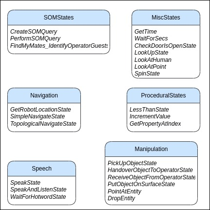
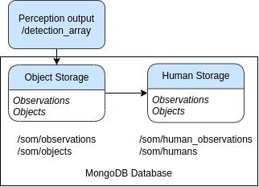

HSR Task Level Planning
The task-level planning uses the ROS SMACH architecture, and it acts as the executive controller of the robot system. Combined with information from semantic map, navigation, object detection, speech and manipulation, the HSR is able to perform useful tasks in a domestic environment (e.g., fetching a bottle of water for a human). The task planner works heavily with semantic map sub-system in order to retrieve all sorts of information seen by the HSR. We go through details of our Semantic map subsystem below.
HSR Semantic map
Learning and recognising objects during operation, and reasoning about them, are key tasks for a mobile service robot in human environments. Our semantic mapping sub-system obtains information from the object detection sub-system and maintains a semantic object map to track the positions of objects based on their class (e.g., book, water bottle). It is implemented on top of a MongoDB database. One functionality of the semantic object map is to evaluate queries on relative position relationships between objects (e.g., is object A above object B?, are there any objects in the living room?). The semantic map can also compute how semantically similar two object classes are (e.g., how semantically similar is an apple to a banana?) using the W3C Web Ontology Language (OWL) ontology format.